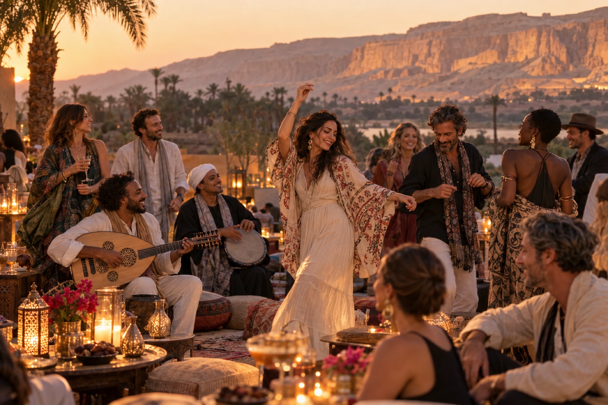
1 August · Dusk
Arrival & Opening
Candlelit ceremony for the new moon.

Your invitation to totality · Aboard Storia
30 July to 9 August 2027
Luxor, the Nile, and Giza

The moment
6 minutes 23 seconds
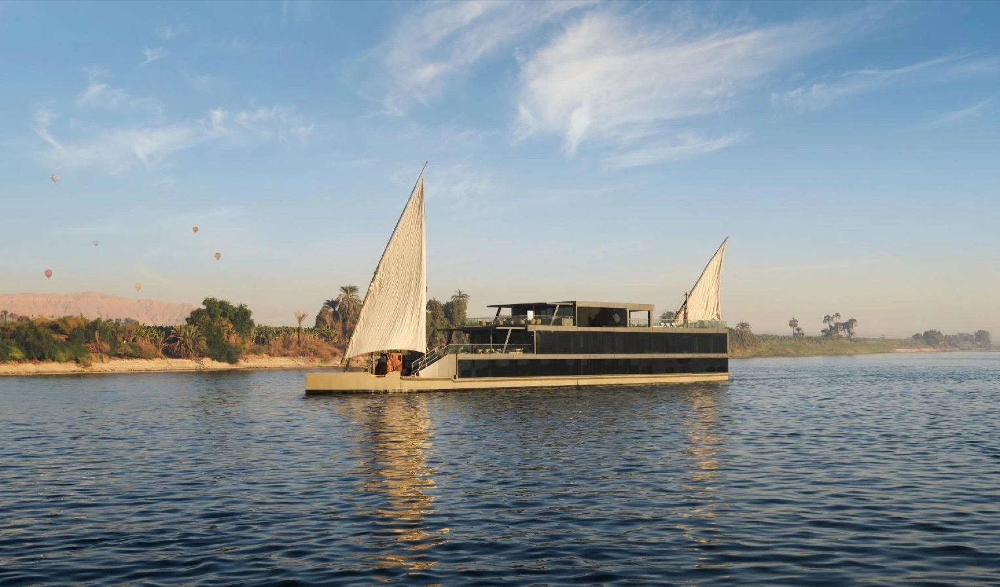
The place
Sail between green shores and desert stone.
Step into temples that still hold their mysteries.
The Nile. Totality. An extraordinary celebration.
Continue the journeyScroll to cross the threshold
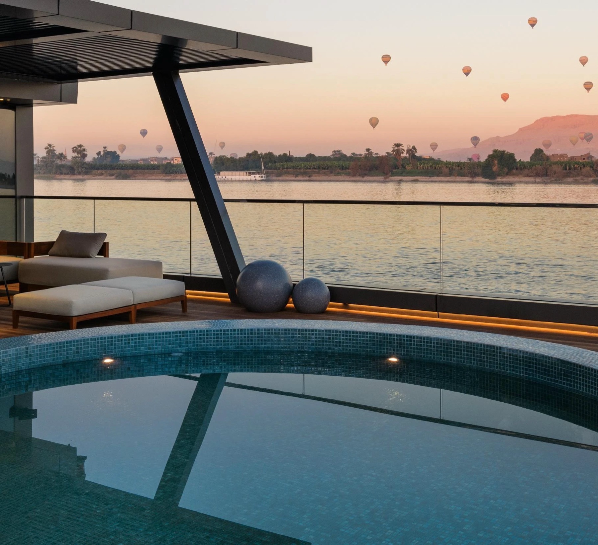
The Storia
Six luxury cabins. Two suites.
An intimate dahabeya on the Nile.
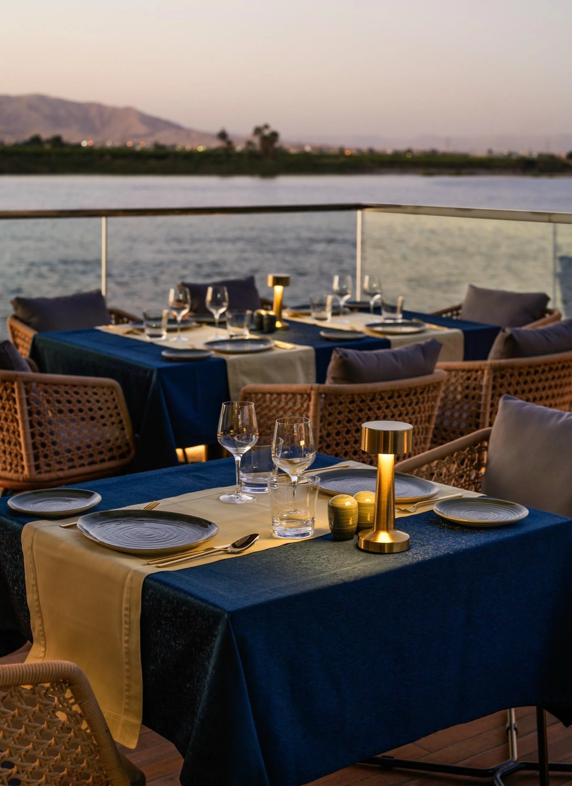
Life aboard
A pool overlooking the Nile. Long lunches.
Dinner on the veranda as the river slips by.

The gathering · Totality
2 August 2027 · Luxor’s West Bank.
A once-in-many-lifetimes event.
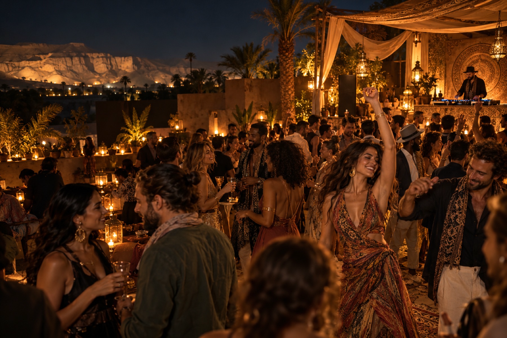
Eclipse Night
2 August · Luxor’s West Bank
An Egyptian feast, music and celebration.

The finale
The Pyramids. The Sphinx. The Grand Egyptian Museum.
Then a shared final night on 8/8.
8 AUGUST · 8/8
Music at the feet of the Sphinx. A shared final night.
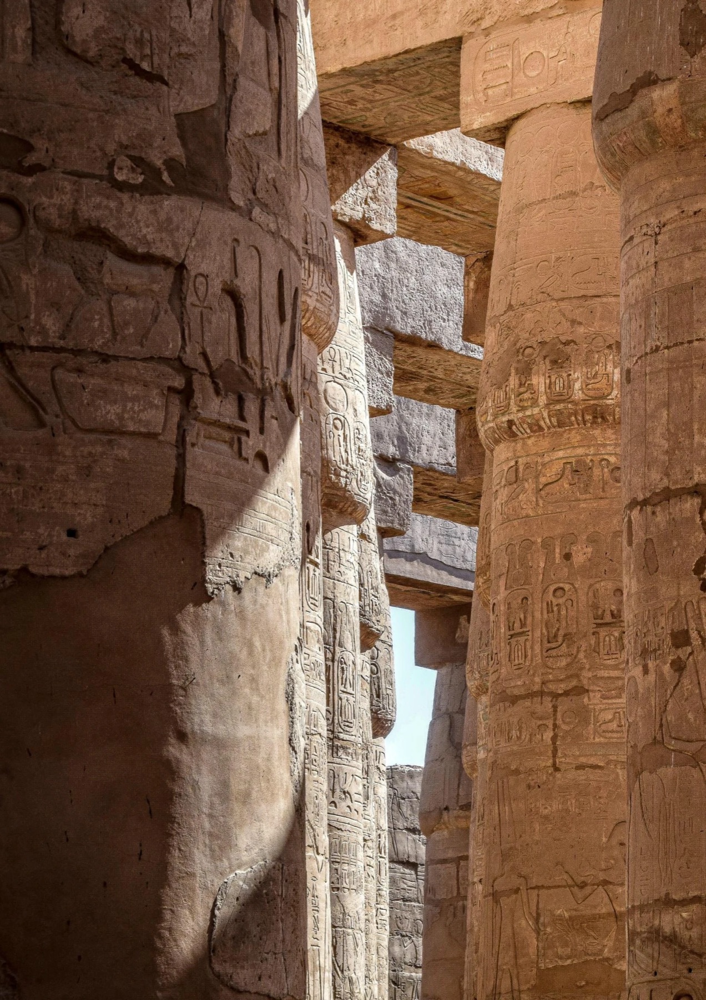
The hosts
Produced by IMXP with ENEV Travel and guided by experienced voyagers.
Your invitation
The gathering · 1–3 August
All Seekers gather on Luxor’s West Bank, 1–3 August.

1 August · Dusk
Candlelit ceremony for the new moon.
2 AUGUST 2027 · LUXOR
Beneath the corona.
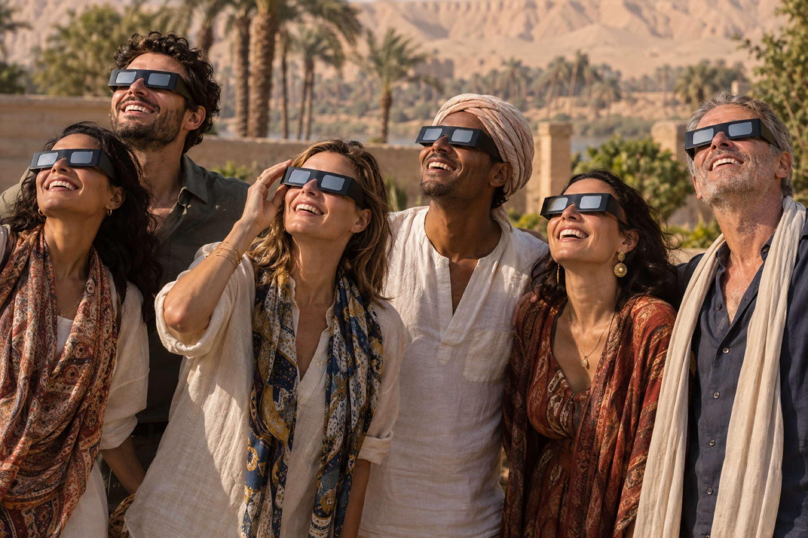
2 August · Eclipse Night
An Egyptian feast, music and celebration on Luxor’s West Bank.
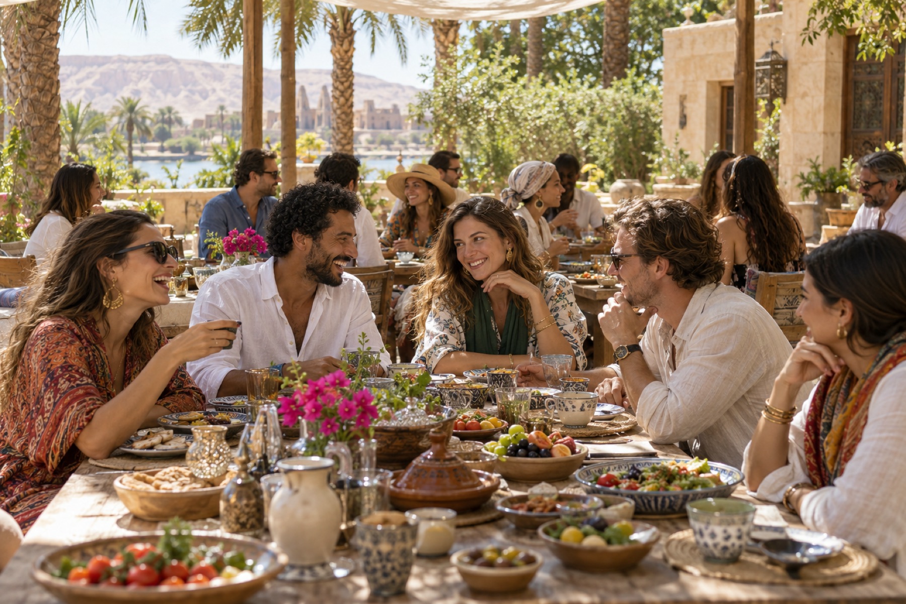
3 August · Morning
A shared brunch, reflection and connection before the journey continues.
Optional hot-air ballooning over Luxor.
The extension · 6—9 August
Three nights in Cairo and Giza, with a Lion’s Gate celebration at the feet of the Sphinx on 8 August.

Bazaars, local makers and the stories of Cairo.

Ancient Egypt, extraordinary art and artefacts.

Five millennia of history on the Giza plateau.
Resized photographs; crops vary by screen. Cairo Markets: V Manninen, CC BY 2.0. Museum: Slyronit, CC BY-SA 4.0. Pyramids: Benjamin Inbar, CC BY-SA 4.0. Resized museum and pyramid images retain their respective CC BY-SA license.
8 AUGUST · 8/8
Music at the feet of the Sphinx. A shared final night.
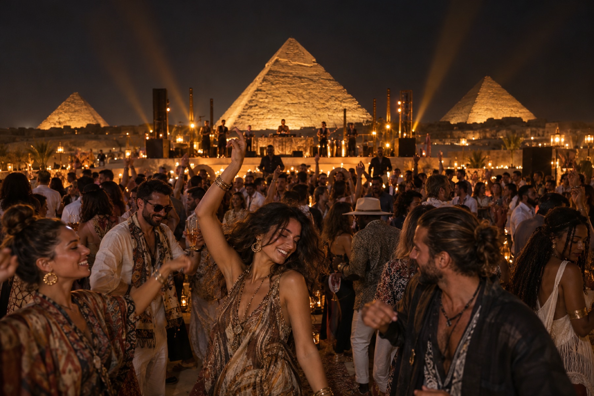
The hosts
Produced by IMXP with ENEV Travel and guided by experienced voyagers.

An Egyptian travel specialist since 1999, bringing local knowledge to cruises, transport and temple experiences.

Egypt Eclipse · Sales & Project Director
More than a decade of travel in Egypt, with a longstanding connection to its temples, the Nile and its people.
Storia offers private guiding, Luxor and Aswan sightseeing and transfers. The sailing programme and event arrangements will be confirmed with your hosts.
Enquire about Storia ↗The dahabeya
A 55-metre dahabeya with six luxury cabins and two suites. Intimate in scale, generous in space.
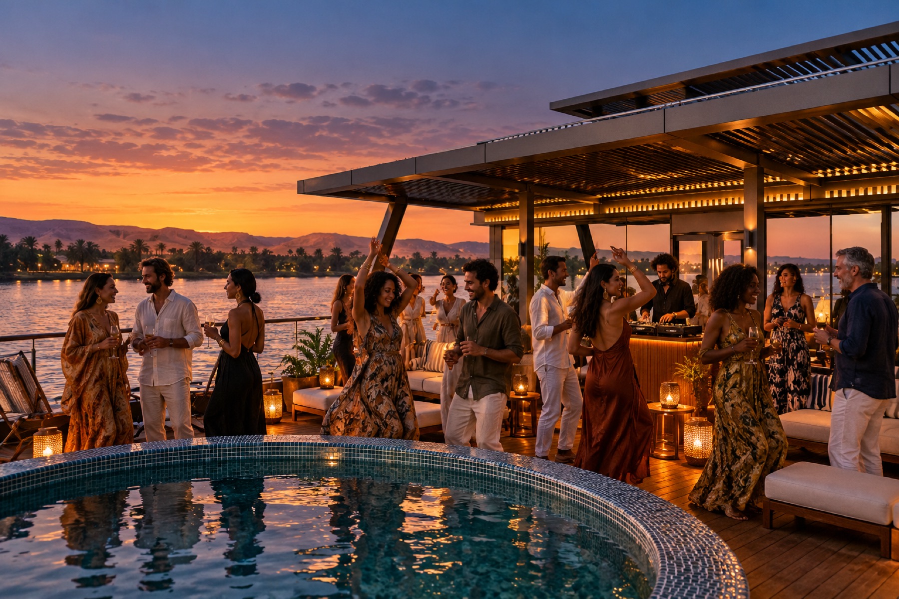
An intimate rooftop party with the river all around you.
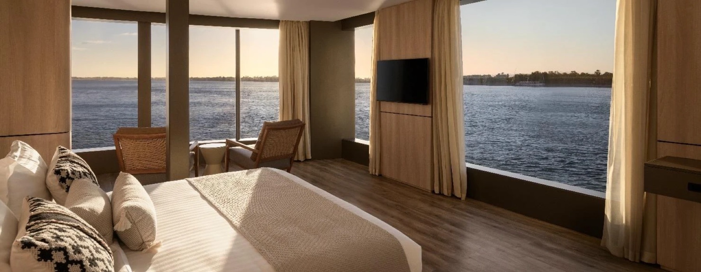
Egyptian cotton linens, ensuite bathrooms, espresso machines and a replenished minibar. Twice-daily housekeeping and turndown service.
Indoor and outdoor lounges, a sun deck and plunge pool, spa and gym. Elevator access connects all three decks.
Cabin allocation, sailing dates and pricing will be confirmed for this invitation.
Enquire about Storia ↗The moment
The longest remaining totality of this century,
in Luxor, the ancient city of the sun.
An intimate Nile journey aboard Storia, the Eclipse Gathering on Luxor’s West Bank and a finale in Giza.
Ancient temples, exceptional hospitality and two unforgettable nights of celebration.
30 July–9 August 2027 · Egypt Eclipse journey window
Enquire about Storia ↗Life aboard
Time on the river is part of the experience.
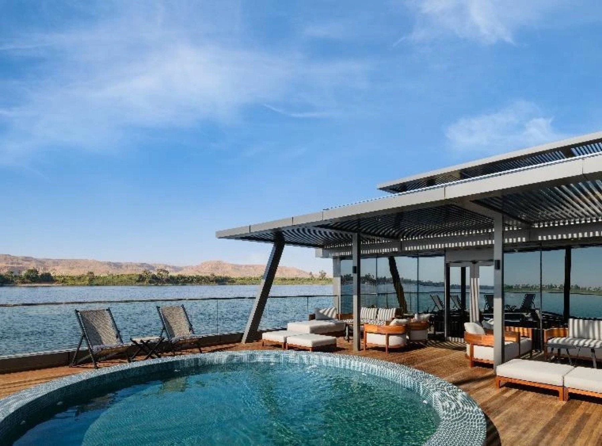
A dip in the plunge pool. Shade in the outdoor lounge. The Nile unfolding around you.
Seasonal dishes inspired by Egyptian and international cuisine, served in the dining room or outside on the river.
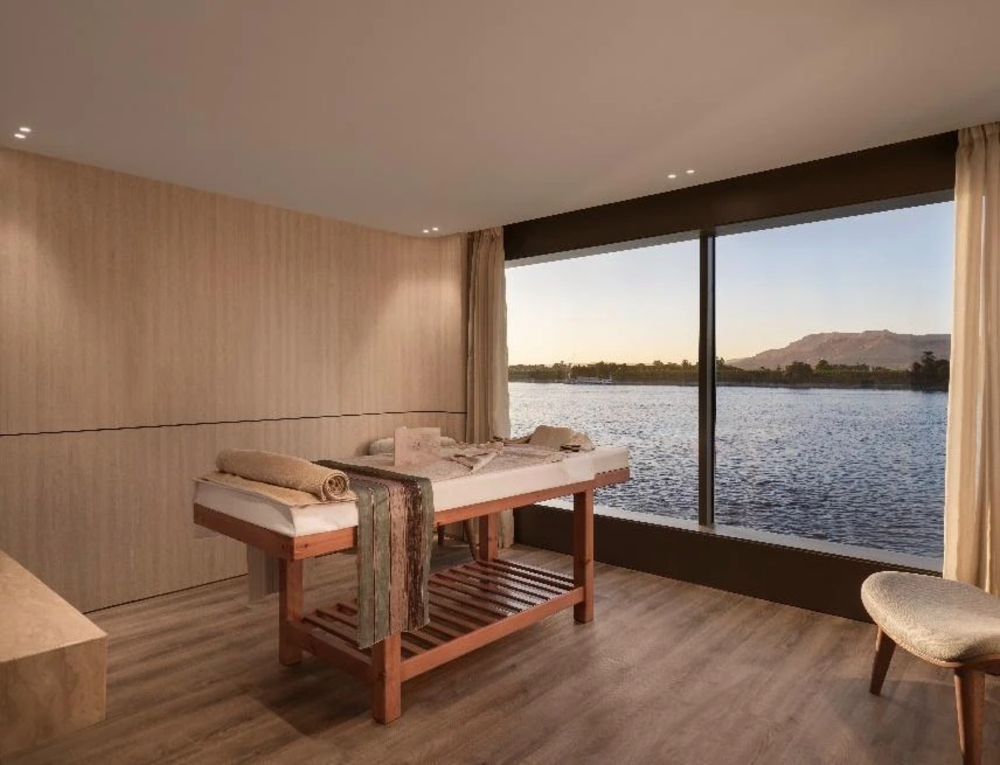
A spa, gym and quiet spaces between temple visits and nights of celebration.
Sunset DJ sessions, long dinners and intimate celebrations on the Nile. The sailing programme will be curated with the hosts.
Enquire about Storia ↗2 August · Luxor’s West Bank
An Egyptian feast, music and celebration after a once-in-many-lifetimes moment.
From the stillness of totality to a night together on Luxor’s West Bank.
The day
The corona above Luxor. A shared experience at the heart of the journey.
The night
Food, music and a gathering beneath the cliffs of the West Bank.
.jpg){kind=link}